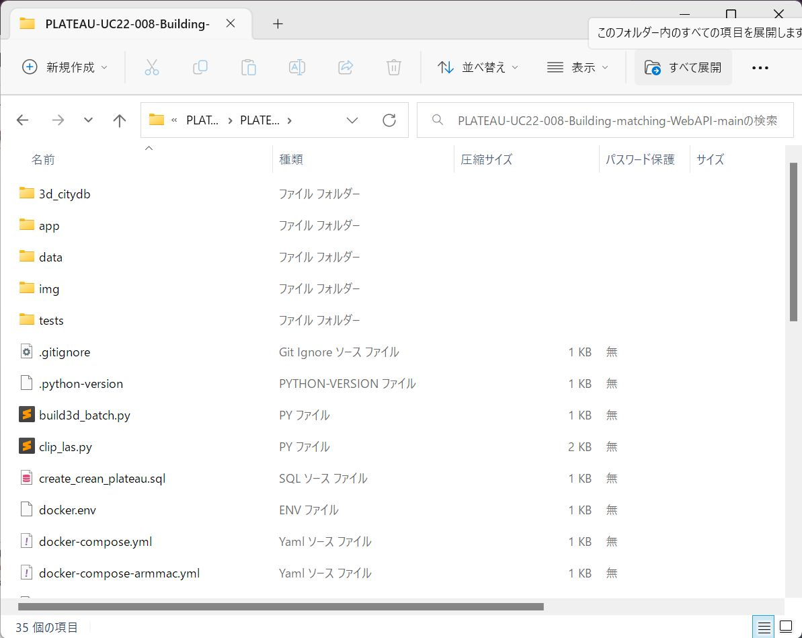
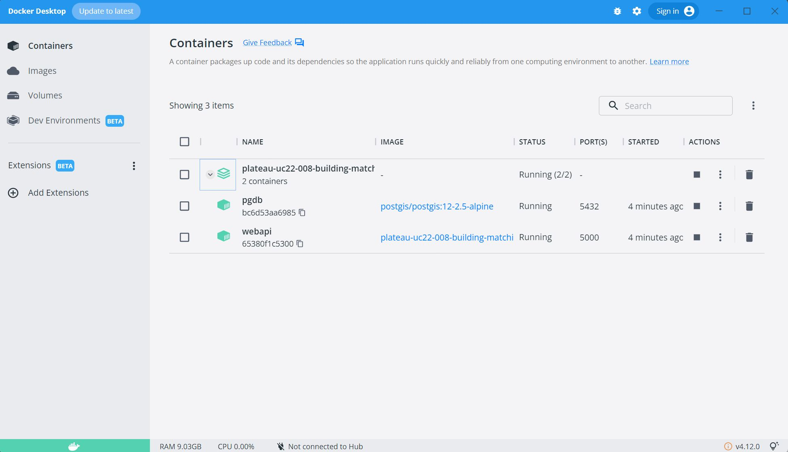
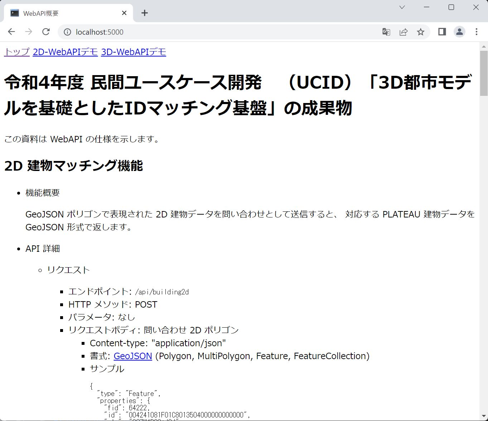

このページでは、建物IDマッチング WebAPI の設定手順を説明します。
- Docker Desktop をインストール
- コードを取得
- Zip ファイルを展開
- PowerShell を開く
- イメージのビルド
- ウェブサーバ実行
- デモアプリケーションを開く
- 停止・アンインストール手順
本ソフトウェアは、Linux システム上で動作するサーバアプリケーションとして開発されています。運用目的でのインストールや実行には Linux およびウェブサーバの管理スキルが必要ですが、開発や動作確認用ならば Windows や Mac 上の Docker Desktop で動かすこともできます。
Windows および MacOS 用の Docker Desktop および Ubuntu 用の Docker Engine で動作を確認していますが、このページでは例として Windows PowerShell + Docker Desktop での手順を説明します。
Docker Desktop をまだインストールしていない場合は、 先に
Docker Desktop をインストール
まず Docker Desktop の公式サイトからダウンロード、インストールしてください。既にインストール済みの場合は、念のため最新バージョンにアップデートしてください。
Windows へのインストール手順 は以下の通りです (2023年2月22日時点)。
- 管理者権限を持つアカウントでログイン。
- Docker Desktop for Windows をダウンロード。
- ダウンロードした
Docker Desktop Installer.exeをダブルクリックして実行。 - もし確認ウィンドウが表示されたら、 "Use WSL 2 instead of Hyper-V" オプションを選択（システムによっては表示されないこともあります）。
- あとは画面表示に従ってインストール。
インストールが完了したら、スタートボタンから Docker Desktop を見つけて実行してください。
コードを取得
ソフトウェア一式を GitHub サイトからダウンロードします。
ウェブブラウザで https://github.com/Project-PLATEAU/PLATEAU-UC22-008-Building-matching-WebAPI/archive/refs/heads/main.zip にアクセスし、ダウンロードした PLATEAU-UC22-008-Building-matching.WebAPI-main.zip を任意のディレクトリに置いてください。
Zip ファイルを展開
エクスプローラーで Zip ファイルをダブルクリックして開き、「すべて展開」ボタンを押して含まれているファイルを展開します。
PowerShell を開く
Win + R キーを押し、「ファイル名を指定して実行」ダイアログが開いたら powershell と入力して OK ボタンを押します。
PowerShell のプロンプトに chdir と入力し、先ほど Zip ファイルを展開したフォルダ名を入力します。
ヒント：PowerShell のウィンドウにエクスプローラーからフォルダをドラッグ＆ドロップしても入力できます。
Enter キーを押してフォルダを移動します。
イメージのビルド
PowerShell のプロンプトに以下のコマンドを入力し、 Docker で実行するイメージを作成します。
> docker compose build
この処理にはしばらく時間がかかります。実行中の処理が表示されますので、終了するまで待ってください。 Use 'docker scan' to run Snyk tests... と表示され、プロンプトが表示されれば成功です。
Apple シリコン搭載の Mac を利用する場合、一部のライブラリをコンパイルしなおす必要があるため、docker compose の後に
-f dockercompose-armmac.ymlを指定してください。。
> docker compose -f dockercompose-armmac.yml build
ウェブサーバ実行
PowerShell のプロンプトに以下のコマンドを入力し、 Docker 上でウェブサーバを起動します。
> docker compose up -d
次のように表示されるはずです（時間は環境によって異なります）。
[+] Running 4/4
- Network plateau-uc22-008-building-matching-webapi-main_default Created 0.0s
- Volume "plateau-uc22-008-building-matching-webapi-main_pgdb_data" Created 0.0s
- Container pgdb Started 2.6s
- Container webapi Started 2.6s
Docker Desktop のウィンドウでは、 Containers のページで 2 つのコンテナが実行中であることを確認できます。
pgdb はデータベース管理システム PostgreSQL サーバで、PLATEAU データの検索機能を提供します。
webapi は WebAPI 機能を提供するウェブサーバです。
デモアプリケーションを開く
ウェブサーバが起動したら、ウェブブラウザで ローカルホストの port 5000 を開いてください。
上部の「2D-WebAPIデモ」および「3D-WebAPIデモ」から WebAPI の機能を試す画面に移動することができます。
以上でインストール完了です。
停止・アンインストール手順
起動したコンテナを停止するには、 Zip ファイルを展開したフォルダで次のコマンドを実行します。
> docker compose down -v
Docker Desktop ウィンドウの Containers 画面で pgdb と webapi が消えていることを確認してください。
その後、 Docker Desktop ウィンドウの Images 画面で plateau-uc22-008-building-matching-webapi-webapi と postgis/postgis を削除します。
Volumes 画面で plateau-uc22-008-building-matching-webapi_pgdb_data が残っている場合はこれも削除します。
あとは Zip ファイルを展開したフォルダごと削除してください。
以上でアンインストール完了です。